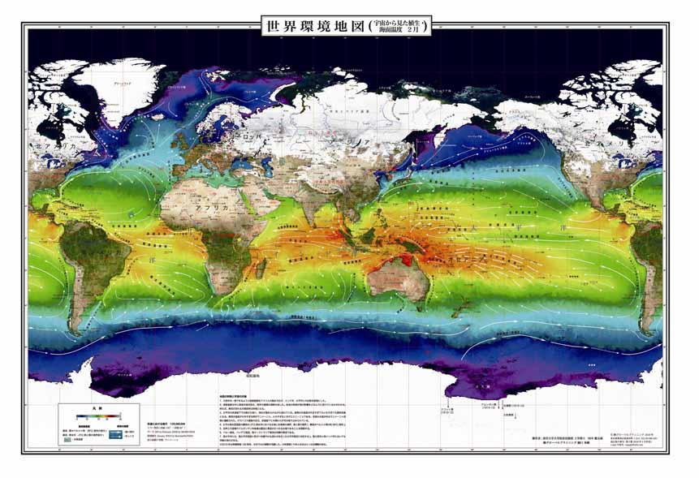

|
「地図展優秀地図」とは？ 日本国際地図学会定期大会では、毎年「地図・図書展」が開催されており、各機関・企業の優れた地図・図書が多数展示、販売されています。本学会において、「定期大会地図・図書展に出展された地図の中で優秀地図を選定・表彰し地図展への出展について関心を高め、また、質の高い優秀地図をICAの国際地図展に出展すること」が議論され、例年実施されている地図・図書展示が、優秀地図の発掘、ならびに日本の地図作製技術向上の一助になることを願い、平成20年度定期大会より「優秀地図表彰のための投票」を実施しています。 投票は、定期大会に参加された会員により、地図・図書展示会場において、「地図作製の企画及び作製技術の面で優れている」と認められる地図を３点選定する形で行われています（試作品を含む紙地図を対象）。 投票の結果、３点を優秀賞として表彰しており、このサイトでは、惜しくも僅差で受賞をのがした作品２点も掲載しました。 なお、「地図展優秀地図選定」の運営は、マップセンター委員会（第24期委員長 鈴木美奈男）が中心となって行っています。出展希望の機関・企業を広く受け付けております。定期大会地図・図書展示に関するお問い合せは、学会事務局までお願いいたします。 |
第３回（平成22年度）
出展機関：
国土交通省国土地理院 ５万分１集成図「奈良」 サイト
http://www.gsi.go.jp/chizuhensyu/chizuhensyu41001.html
出展機関：

画像提供 株式会社グローバルプランニング 無断転載禁止
織田 雅己
出展機関：
地図工房 トンビの目
地図工房 トンビの目 サイト
出展機関：
制作：
出展機関：
出展機関：
画像提供 国土交通省国土地理院 無断転載禁止
| １．国土交通省 国土地理院 ２．海上保安庁 海洋情報部 ３．(財)日本水路協会 |
| ４．(財)地図情報センター ５．(財)日本地図センター ６．(社)日本地図調製業協会 |
| ７．(株)古今書院 ８．東京カートグラフィック(株) ９．(株)グロ−バルプランニング |
| 10．(株) 之 潮 11．(株) 昭 文 社 12．GIS NEXT（(株)ネクストパブリッシング） |
第２回（平成21年度）
出展機関：
財団法人 日本水路協会 「海・陸情報図」 サイト
出展機関：

画像提供 国土交通省国土地理院 無断転載禁止
出展機関：
国土交通省国土地理院 地球地図 サイト
http://www1.gsi.go.jp/geowww/globalmap-gsi/globalmap-gsi.html
出展機関：
国土交通省国土地理院内 「航空レーザー測量」サイト
出展機関：

(株)グローバルプランニング カタログより転載
| １．海上保安庁 海洋情報部 ２．（株）グローバルプランニング ３．国土交通省 国土地理院 |
| ４．(株)古今書院 ５．(株)之潮 ６．（社）日本地図調製業協会 |
| ７．（財）日本水路協会 ８．東京カートグラフィック(株) ９．ＧＩＳ ＮＥＸＴ（(株)ネクストパブリッシング） |
| 10．(財）日本地図センター 11．(財）地図情報センター 12．(株)帝国書院 |
| 13．（財）日本デジタル道路地図協会 14．(株)昭文社 15．紙久図や 京極堂 |
第１回（平成20年度）
出展機関：

出展機関：
財団法人 日本水路協会 「海・陸情報図」サイト
出展機関：
国土交通省国土地理院内 「月の地形図」サイト
出展機関：
国土交通省国土地理院内 「1:25,000デジタル標高地形図（高知）」サイト
http://www1.gsi.go.jp/geowww/Laser_HP/digital_image.html#kochi
出展機関：
東京カートグラフィック株式会社内 「平成20年度カレンダー（光る地図）」サイト
| １．国土地理院 ２．海上保安庁 海洋情報部 ３．（財）日本水路協会 |
| ４．(財）日本地図センター ５．（財）日本デジタル道路地図協会 ６．（株）グローバルプランニング |
| ７．内外地図（株） ８．(株)昭文社 ９．(財）地図情報センター |
| 10．彩の国環境地図作品展 11．（社）日本地図調製業協会 |
| 12．帝国書院 13．東京カートグラフィック(株) 14．シービーエス(株) |
| 15．(株)古今書院 16．不二出版 17．(株)之潮 |
 |
 |
 |
 |